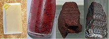

Phosphorus
| 
waxy white (yellow cut), red (granules centre left, chunk centre right), and violet phosphorus
|
|||||||||||||||||||||||||||||||||||||||||||||||||||||||||||||||||||||||||||||||||||||||||||||||||||||||||||||||||||||||||||||||||||||||||||||||||||||||||||||||||||||||||||||||||||||||||||||||||||||||||||||||||||||||||||||||||||||
| General properties | |||||||||||||||||||||||||||||||||||||||||||||||||||||||||||||||||||||||||||||||||||||||||||||||||||||||||||||||||||||||||||||||||||||||||||||||||||||||||||||||||||||||||||||||||||||||||||||||||||||||||||||||||||||||||||||||||||||
|---|---|---|---|---|---|---|---|---|---|---|---|---|---|---|---|---|---|---|---|---|---|---|---|---|---|---|---|---|---|---|---|---|---|---|---|---|---|---|---|---|---|---|---|---|---|---|---|---|---|---|---|---|---|---|---|---|---|---|---|---|---|---|---|---|---|---|---|---|---|---|---|---|---|---|---|---|---|---|---|---|---|---|---|---|---|---|---|---|---|---|---|---|---|---|---|---|---|---|---|---|---|---|---|---|---|---|---|---|---|---|---|---|---|---|---|---|---|---|---|---|---|---|---|---|---|---|---|---|---|---|---|---|---|---|---|---|---|---|---|---|---|---|---|---|---|---|---|---|---|---|---|---|---|---|---|---|---|---|---|---|---|---|---|---|---|---|---|---|---|---|---|---|---|---|---|---|---|---|---|---|---|---|---|---|---|---|---|---|---|---|---|---|---|---|---|---|---|---|---|---|---|---|---|---|---|---|---|---|---|---|---|---|---|---|---|---|---|---|---|---|---|---|---|---|---|---|---|---|---|
| Name, symbol | phosphorus, P | ||||||||||||||||||||||||||||||||||||||||||||||||||||||||||||||||||||||||||||||||||||||||||||||||||||||||||||||||||||||||||||||||||||||||||||||||||||||||||||||||||||||||||||||||||||||||||||||||||||||||||||||||||||||||||||||||||||
| Pronunciation | /ˈfɒsfərəs/ FOS-fər-əs |
||||||||||||||||||||||||||||||||||||||||||||||||||||||||||||||||||||||||||||||||||||||||||||||||||||||||||||||||||||||||||||||||||||||||||||||||||||||||||||||||||||||||||||||||||||||||||||||||||||||||||||||||||||||||||||||||||||
| Appearance | colourless, waxy white, yellow, scarlet, red, violet, black | ||||||||||||||||||||||||||||||||||||||||||||||||||||||||||||||||||||||||||||||||||||||||||||||||||||||||||||||||||||||||||||||||||||||||||||||||||||||||||||||||||||||||||||||||||||||||||||||||||||||||||||||||||||||||||||||||||||
| Phosphorus in the periodic table | |||||||||||||||||||||||||||||||||||||||||||||||||||||||||||||||||||||||||||||||||||||||||||||||||||||||||||||||||||||||||||||||||||||||||||||||||||||||||||||||||||||||||||||||||||||||||||||||||||||||||||||||||||||||||||||||||||||
|
|||||||||||||||||||||||||||||||||||||||||||||||||||||||||||||||||||||||||||||||||||||||||||||||||||||||||||||||||||||||||||||||||||||||||||||||||||||||||||||||||||||||||||||||||||||||||||||||||||||||||||||||||||||||||||||||||||||
| Atomic number | 15 | ||||||||||||||||||||||||||||||||||||||||||||||||||||||||||||||||||||||||||||||||||||||||||||||||||||||||||||||||||||||||||||||||||||||||||||||||||||||||||||||||||||||||||||||||||||||||||||||||||||||||||||||||||||||||||||||||||||
| Standard atomic weight (±) | 30.973761998(5)[1] | ||||||||||||||||||||||||||||||||||||||||||||||||||||||||||||||||||||||||||||||||||||||||||||||||||||||||||||||||||||||||||||||||||||||||||||||||||||||||||||||||||||||||||||||||||||||||||||||||||||||||||||||||||||||||||||||||||||
| Element category | polyatomic nonmetal, sometimes considered a metalloid | ||||||||||||||||||||||||||||||||||||||||||||||||||||||||||||||||||||||||||||||||||||||||||||||||||||||||||||||||||||||||||||||||||||||||||||||||||||||||||||||||||||||||||||||||||||||||||||||||||||||||||||||||||||||||||||||||||||
| Group, block | group 15 (pnictogens), p-block | ||||||||||||||||||||||||||||||||||||||||||||||||||||||||||||||||||||||||||||||||||||||||||||||||||||||||||||||||||||||||||||||||||||||||||||||||||||||||||||||||||||||||||||||||||||||||||||||||||||||||||||||||||||||||||||||||||||
| Period | period 3 | ||||||||||||||||||||||||||||||||||||||||||||||||||||||||||||||||||||||||||||||||||||||||||||||||||||||||||||||||||||||||||||||||||||||||||||||||||||||||||||||||||||||||||||||||||||||||||||||||||||||||||||||||||||||||||||||||||||
| Electron configuration | [Ne] 3s2 3p3 | ||||||||||||||||||||||||||||||||||||||||||||||||||||||||||||||||||||||||||||||||||||||||||||||||||||||||||||||||||||||||||||||||||||||||||||||||||||||||||||||||||||||||||||||||||||||||||||||||||||||||||||||||||||||||||||||||||||
| per shell | 2, 8, 5 | ||||||||||||||||||||||||||||||||||||||||||||||||||||||||||||||||||||||||||||||||||||||||||||||||||||||||||||||||||||||||||||||||||||||||||||||||||||||||||||||||||||||||||||||||||||||||||||||||||||||||||||||||||||||||||||||||||||
| Physical properties | |||||||||||||||||||||||||||||||||||||||||||||||||||||||||||||||||||||||||||||||||||||||||||||||||||||||||||||||||||||||||||||||||||||||||||||||||||||||||||||||||||||||||||||||||||||||||||||||||||||||||||||||||||||||||||||||||||||
| Phase | solid | ||||||||||||||||||||||||||||||||||||||||||||||||||||||||||||||||||||||||||||||||||||||||||||||||||||||||||||||||||||||||||||||||||||||||||||||||||||||||||||||||||||||||||||||||||||||||||||||||||||||||||||||||||||||||||||||||||||
| Density near r.t. | white: 1.823 g·cm−3 red: ≈ 2.2–2.34 g·cm−3 violet: 2.36 g·cm−3 black: 2.69 g·cm−3 |
||||||||||||||||||||||||||||||||||||||||||||||||||||||||||||||||||||||||||||||||||||||||||||||||||||||||||||||||||||||||||||||||||||||||||||||||||||||||||||||||||||||||||||||||||||||||||||||||||||||||||||||||||||||||||||||||||||
| Heat of fusion | white: 0.66 kJ·mol−1 | ||||||||||||||||||||||||||||||||||||||||||||||||||||||||||||||||||||||||||||||||||||||||||||||||||||||||||||||||||||||||||||||||||||||||||||||||||||||||||||||||||||||||||||||||||||||||||||||||||||||||||||||||||||||||||||||||||||
| Heat of vapourisation | white: 51.9 kJ·mol−1 | ||||||||||||||||||||||||||||||||||||||||||||||||||||||||||||||||||||||||||||||||||||||||||||||||||||||||||||||||||||||||||||||||||||||||||||||||||||||||||||||||||||||||||||||||||||||||||||||||||||||||||||||||||||||||||||||||||||
| Molar heat capacity | white: 23.824 J·mol−1·K−1 | ||||||||||||||||||||||||||||||||||||||||||||||||||||||||||||||||||||||||||||||||||||||||||||||||||||||||||||||||||||||||||||||||||||||||||||||||||||||||||||||||||||||||||||||||||||||||||||||||||||||||||||||||||||||||||||||||||||
vapour pressure (white)
|
|||||||||||||||||||||||||||||||||||||||||||||||||||||||||||||||||||||||||||||||||||||||||||||||||||||||||||||||||||||||||||||||||||||||||||||||||||||||||||||||||||||||||||||||||||||||||||||||||||||||||||||||||||||||||||||||||||||
vapour pressure (red, b.p. 431 °C)
|
|||||||||||||||||||||||||||||||||||||||||||||||||||||||||||||||||||||||||||||||||||||||||||||||||||||||||||||||||||||||||||||||||||||||||||||||||||||||||||||||||||||||||||||||||||||||||||||||||||||||||||||||||||||||||||||||||||||
| Atomic properties | |||||||||||||||||||||||||||||||||||||||||||||||||||||||||||||||||||||||||||||||||||||||||||||||||||||||||||||||||||||||||||||||||||||||||||||||||||||||||||||||||||||||||||||||||||||||||||||||||||||||||||||||||||||||||||||||||||||
| Oxidation states | 5, 4, 3, 2,[2] 1,[3] −1, −2, −3 (a mildly acidic oxide) | ||||||||||||||||||||||||||||||||||||||||||||||||||||||||||||||||||||||||||||||||||||||||||||||||||||||||||||||||||||||||||||||||||||||||||||||||||||||||||||||||||||||||||||||||||||||||||||||||||||||||||||||||||||||||||||||||||||
| Electronegativity | Pauling scale: 2.19 | ||||||||||||||||||||||||||||||||||||||||||||||||||||||||||||||||||||||||||||||||||||||||||||||||||||||||||||||||||||||||||||||||||||||||||||||||||||||||||||||||||||||||||||||||||||||||||||||||||||||||||||||||||||||||||||||||||||
| Ionisation energies | 1st: 1011.8 kJ·mol−1 2nd: 1907 kJ·mol−1 3rd: 2914.1 kJ·mol−1 (more) |
||||||||||||||||||||||||||||||||||||||||||||||||||||||||||||||||||||||||||||||||||||||||||||||||||||||||||||||||||||||||||||||||||||||||||||||||||||||||||||||||||||||||||||||||||||||||||||||||||||||||||||||||||||||||||||||||||||
| Covalent radius | 107±3 pm | ||||||||||||||||||||||||||||||||||||||||||||||||||||||||||||||||||||||||||||||||||||||||||||||||||||||||||||||||||||||||||||||||||||||||||||||||||||||||||||||||||||||||||||||||||||||||||||||||||||||||||||||||||||||||||||||||||||
| Van der Waals radius | 180 pm | ||||||||||||||||||||||||||||||||||||||||||||||||||||||||||||||||||||||||||||||||||||||||||||||||||||||||||||||||||||||||||||||||||||||||||||||||||||||||||||||||||||||||||||||||||||||||||||||||||||||||||||||||||||||||||||||||||||
| Miscellanea | |||||||||||||||||||||||||||||||||||||||||||||||||||||||||||||||||||||||||||||||||||||||||||||||||||||||||||||||||||||||||||||||||||||||||||||||||||||||||||||||||||||||||||||||||||||||||||||||||||||||||||||||||||||||||||||||||||||
| Crystal structure | body-centered cubic (bcc)
 |
||||||||||||||||||||||||||||||||||||||||||||||||||||||||||||||||||||||||||||||||||||||||||||||||||||||||||||||||||||||||||||||||||||||||||||||||||||||||||||||||||||||||||||||||||||||||||||||||||||||||||||||||||||||||||||||||||||
| Thermal conductivity | white: 0.236 W·m−1·K−1 black: 12.1 W·m−1·K−1 |
||||||||||||||||||||||||||||||||||||||||||||||||||||||||||||||||||||||||||||||||||||||||||||||||||||||||||||||||||||||||||||||||||||||||||||||||||||||||||||||||||||||||||||||||||||||||||||||||||||||||||||||||||||||||||||||||||||
| Magnetic ordering | white, red, violet, black: diamagnetic[4] | ||||||||||||||||||||||||||||||||||||||||||||||||||||||||||||||||||||||||||||||||||||||||||||||||||||||||||||||||||||||||||||||||||||||||||||||||||||||||||||||||||||||||||||||||||||||||||||||||||||||||||||||||||||||||||||||||||||
| Bulk modulus | white: 5 GPa red: 11 GPa |
||||||||||||||||||||||||||||||||||||||||||||||||||||||||||||||||||||||||||||||||||||||||||||||||||||||||||||||||||||||||||||||||||||||||||||||||||||||||||||||||||||||||||||||||||||||||||||||||||||||||||||||||||||||||||||||||||||
| CAS Registry Number | white: 12185-10-3 red: 7723-14-0 |
||||||||||||||||||||||||||||||||||||||||||||||||||||||||||||||||||||||||||||||||||||||||||||||||||||||||||||||||||||||||||||||||||||||||||||||||||||||||||||||||||||||||||||||||||||||||||||||||||||||||||||||||||||||||||||||||||||
| History | |||||||||||||||||||||||||||||||||||||||||||||||||||||||||||||||||||||||||||||||||||||||||||||||||||||||||||||||||||||||||||||||||||||||||||||||||||||||||||||||||||||||||||||||||||||||||||||||||||||||||||||||||||||||||||||||||||||
| Discovery | Hennig Brand (1669) | ||||||||||||||||||||||||||||||||||||||||||||||||||||||||||||||||||||||||||||||||||||||||||||||||||||||||||||||||||||||||||||||||||||||||||||||||||||||||||||||||||||||||||||||||||||||||||||||||||||||||||||||||||||||||||||||||||||
| Recognized as an element by | Antoine Lavoisier[5] (1777) | ||||||||||||||||||||||||||||||||||||||||||||||||||||||||||||||||||||||||||||||||||||||||||||||||||||||||||||||||||||||||||||||||||||||||||||||||||||||||||||||||||||||||||||||||||||||||||||||||||||||||||||||||||||||||||||||||||||
| Most stable isotopes | |||||||||||||||||||||||||||||||||||||||||||||||||||||||||||||||||||||||||||||||||||||||||||||||||||||||||||||||||||||||||||||||||||||||||||||||||||||||||||||||||||||||||||||||||||||||||||||||||||||||||||||||||||||||||||||||||||||
|
|||||||||||||||||||||||||||||||||||||||||||||||||||||||||||||||||||||||||||||||||||||||||||||||||||||||||||||||||||||||||||||||||||||||||||||||||||||||||||||||||||||||||||||||||||||||||||||||||||||||||||||||||||||||||||||||||||||
{kind=link}
Phosphorus is a chemical element with symbol P and atomic number 15. As an element, phosphorus exists in two major forms—white phosphorus and red phosphorus—but due to its high reactivity, phosphorus is never found as a free element on Earth. Instead phosphorus-containing minerals are almost always present in their maximally oxidised state, as inorganic phosphate rocks.
The first form of elemental phosphorus to be produced (white phosphorus, in 1669) emits a faint glow upon exposure to oxygen – hence its name given from Greek mythology, Φωσφόρος meaning "light-bearer" (Latin Lucifer), referring to the "Morning Star", the planet Venus (or Mercury). The term "phosphorescence", meaning glow after illumination, originally derives from this property of phosphorus, although this word has since been used for a different physical process that produces a glow. The glow of phosphorus itself originates from oxidation of the white (but not red) phosphorus— a process now termed chemiluminescence. Together with nitrogen, arsenic, and antimony, phosphorus is classified as a pnictogen.
Phosphorus is essential for life. Phosphates (compounds containing the phosphate ion, PO4−3) are a component of DNA, RNA, ATP, and also the phospholipids, which form all cell membranes. Demonstrating the link between phosphorus and life, elemental phosphorus was first isolated from human urine, and bone ash was an important early phosphate source. Phosphate minerals are fossils. Low phosphate levels are an important limit to growth in some aquatic systems. In a commercial sense, the vast majority of phosphorus compounds are consumed as fertilisers. Phosphate is needed to replace the phosphorus that plants remove from the soil, and its annual demand is rising nearly twice as fast as the growth of the human population.[6] Other applications include the role of organophosphorus compounds in detergents, pesticides, and nerve agents.[7] Of all the pnictogens, phosphorus is the most abundant in the Earth's crust, composing 9.9×10−2% of said crust.[8]
Contents
[hide]Characteristics
Physical
{kind=link}
Phosphorus exists as several forms (allotropes) that exhibit strikingly different properties.[9] The two most common allotropes are white phosphorus and red phosphorus. Another form, scarlet phosphorus, is obtained by allowing a solution of white phosphorus in carbon disulfide to evaporate in sunlight. Black phosphorus is obtained by heating white phosphorus under high pressures (about 12,000 standard atmospheres or 1.2 gigapascals). In appearance, properties, and structure, it resembles graphite, being black and flaky, a conductor of electricity, and has puckered sheets of linked atoms. Another allotrope is diphosphorus; it contains a phosphorus dimer as a structural unit and is highly reactive.[10]
{kind=link}
{kind=link}
The most important form of elemental phosphorus from the perspective of applications and the chemical literature is white phosphorus, often abbreviated as WP. It consists of tetrahedral P
4 molecules, in which each atom is bound to the other three atoms by a single bond. This P
4 tetrahedron is also present in liquid and gaseous
phosphorus up to the temperature of 800 °C (1,470 °F) when it
starts decomposing to P
2 molecules.[11]
Solid white exists in two forms. At low-temperatures, the β form is
stable. At high-temperatures the α form is predominant. These forms
differ in terms of the relative orientations of the constituent P4 tetrahedra.
White phosphorus is the least stable, the most reactive, the most volatile, the least dense,
and the most toxic of the allotropes. White phosphorus gradually
changes to red phosphorus. This transformation is accelerated by light
and heat, and samples of white phosphorus almost always contain some red
phosphorus and accordingly appear yellow. For this reason, white
phosphorus that is aged or otherwise impure (e.g. weapons-grade not
lab-grade WP) is also called yellow phosphorus. White phosphorus glows in the dark (when exposed to oxygen) with a very faint tinge of green and blue, is highly flammable and pyrophoric (self-igniting) upon contact with air and is toxic (causing severe liver damage on ingestion). Owing to its pyrophoricity, white phosphorus is used as an additive in napalm. The odour of combustion of this form has a characteristic garlic smell, and samples are commonly coated with white "(di)phosphorus pentoxide", which consists of P
4O
10 tetrahedra with oxygen inserted between the phosphorus
atoms and at their vertices. White phosphorus is insoluble in water but
soluble in carbon disulfide.[12]
Thermolysis (cracking) of P4 at 1100 kelvin) gives diphosphorus, P2. This species is not stable as a solid or liquid. The dimeric unit contains a triple bond and is analogous to N2. It can also be generated as a transient intermediate in solution by thermolysis of organophosphorus precursor reagents.[13] At still higher temperatures, P2 dissociates into atomic P.
Although the term phosphorescence is derived from phosphorus, the reaction that gives phosphorus its glow is properly called chemiluminescence (glowing due to a cold chemical reaction), not phosphorescence (re-emitting light that previously fell onto a substance and excited it).
Red phosphorus
{kind=link}
{kind=link}
Red phosphorus is polymeric in structure. It can be viewed as a derivative of P4 wherein one P-P bond is broken, and one additional bond is formed with the neighbouring tetrahedron resulting in a chain-like structure. Red phosphorus may be formed by heating white phosphorus to 250 °C (482 °F) or by exposing white phosphorus to sunlight.[14] Phosphorus after this treatment is amorphous. Upon further heating, this material crystallises. In this sense, red phosphorus is not an allotrope, but rather an intermediate phase between the white and violet phosphorus, and most of its properties have a range of values. For example, freshly prepared, bright red phosphorus is highly reactive and ignites at about 300 °C (572 °F),[15] though it is still more stable than white phosphorus, which ignites at about 30 °C (86 °F).[16] After prolonged heating or storage, the color darkens (see infobox images); the resulting product is more stable and does not spontaneously ignite in air.[17]
Violet phosphorus
Violet phosphorus is a form of phosphorus that can be produced by day-long annealing of red phosphorus above 550 °C. In 1865, Hittorf discovered that when phosphorus was recrystallized from molten lead, a red/purple form is obtained. Therefore this form is sometimes known as "Hittorf's phosphorus" (or violet or α-metallic phosphorus).[10]
Black phosphorus
{kind=link}
Black phosphorus is the least reactive allotrope and the thermodynamically stable form below 550 °C (1,022 °F). It is also known as β-metallic phosphorus and has a structure somewhat resembling that of graphite.[18][19] High pressures are usually required to produce black phosphorus, but it can also be produced at ambient conditions using metal salts as catalysts.[20]
| Form | white(α) | white(β) | violet | black |
|---|---|---|---|---|
| Symmetry | Body-centred cubic | Triclinic | Monoclinic | Orthorhombic |
| Pearson symbol | aP24 | mP84 | oS8 | |
| Space group | I43m | P1 No.2 | P2/c No.13 | Cmca No.64 |
| Density (g/cm3) | 1.828 | 1.88 | 2.36 | 2.69 |
| Bandgap (eV) | 2.1 | 1.5 | 0.34 | |
| Refractive index | 1.8244 | 2.6 | 2.4 |
Isotopes
Twenty-three isotopes of phosphorus are known,[21] including all possibilities from 24
P up to 46
P. Only 31
P is stable and is therefore present at 100% abundance. The half-integer nuclear spin and high abundance of 31P make phosphorus-31 NMR spectroscopy a very useful analytical tool in studies of phosphorus-containing samples.
Two radioactive isotopes of phosphorus have half lives suitable for biological scientific experiments. These are:
- 32
P, a beta-emitter (1.71 MeV) with a half-life of 14.3 days, which is used routinely in life-science laboratories, primarily to produce radiolabeled DNA and RNA probes, e.g. for use in Northern blots or Southern blots. Because the high energy beta particles produced penetrate skin and corneas, and because any 32
P ingested, inhaled, or absorbed is readily incorporated into bone and nucleic acids, Occupational Safety and Health Administration in the United States, and similar institutions in other developed countries require that a lab coat, disposable gloves and safety glasses or goggles be worn when working with 32
P, and that working directly over an open container be avoided in order to protect the eyes. Monitoring personal, clothing, and surface contamination is also required. In addition, due to the high energy of the beta particles, shielding this radiation with the normally used dense materials (e.g. lead), gives rise to secondary emission of X-rays via Bremsstrahlung (braking radiation). Therefore shielding must be accomplished with low density materials, e.g. Plexiglas (Lucite), other plastics, water, or (when transparency is not required), even wood.[22] - 33
P, a beta-emitter (0.25 MeV) with a half-life of 25.4 days. It is used in life-science laboratories in applications in which lower energy beta emissions are advantageous such as DNA sequencing.
Occurrence
Minerals (phosphate rock)

Phosphorus is not found free in nature, but it is widely distributed in many minerals, mainly phosphates. Inorganic phosphate rock, which is partially made of apatite (an impure tri-calcium phosphate mineral), is today the chief commercial source of this element. According to the US Geological Survey (USGS), about 50 percent of the global phosphorus reserves are in the Arab nations.[23] Large deposits of apatite are located in China, Russia, Morocco,[6] Florida, Idaho, Tennessee, Utah, and elsewhere.[24] Albright and Wilson in the UK and their Niagara Falls plant, for instance, were using phosphate rock in the 1890s and 1900s from Tennessee, Florida, and the Îles du Connétable (guano island sources of phosphate); by 1950 they were using phosphate rock mainly from Tennessee and North Africa.[25] In the early 1990s Albright and Wilson's purified wet phosphoric acid business was being adversely affected by phosphate rock sales by China and the entry of their long-standing Moroccan phosphate suppliers into the purified wet phosphoric acid business.[26]
{kind=link}
In 2012, the USGS estimated 71 billion tons of world reserves, where reserve figures refer to the amount assumed recoverable at current market prices; 0.19 billion tons were mined in 2011.[27] Critical to contemporary agriculture, its annual demand is rising nearly twice as fast as the growth of the human population.[6]
Recent reports suggest that production of phosphorus may have peaked, leading to the possibility of global shortages by 2040.[28] In 2007, at the rate of consumption, the supply of phosphorus was estimated to run out in 345 years.[29] However, some scientists now believe that a "peak phosphorus" will occur in 30 years and that "At current rates, reserves will be depleted in the next 50 to 100 years."[30] Cofounder of Boston-based investment firm and environmental foundation Jeremy Grantham wrote in Nature in November 2012, that consumption of the element "must be drastically reduced in the next 20-40 years or we will begin to starve."[6][31] According to N.N. Greenwood and A. Earnshaw, authors of the textbook, Chemistry of the Elements, however, phosphorus comprises about 0.1% by mass of the average rock, and consequently the Earth's supply is vast, although dilute.[12]
Urine
Urine contains most (94% according to Wolgast[32]) of the NPK nutrients excreted by the human body. The more general limitations to using urine as fertilizer depend mainly on the potential for buildup of excess nitrogen (due to the high ratio of that macronutrient),[33] and inorganic salts such as sodium chloride, which are also part of the wastes excreted by the renal system. The degree to which these factors impact the effectiveness depends on the term of use, salinity tolerance of the plant, soil composition, addition of other fertilizing compounds, and quantity of rainfall or other irrigation.
Urine typically contributes 70% of the nitrogen and more than half the phosphorus and potassium found in urban waste water flows, while making up less than 1% of the overall volume. Thus far, source separation, or urine diversion and on-site treatment has been implemented in South Africa, China, and Sweden among other countries with the Bill and Melinda Gates Foundation provided some of the funding implementations.[34]
"Urine management" is a relatively new way to view closing the cycle of agricultural nutrient flows and reducing sewage treatment costs and ecological consequences such as eutrophication resulting from the influx of nutrient rich effluent into aquatic or marine ecosystems.[35] Proponents of urine as a natural source of agricultural fertilizer claim the risks to be negligible or acceptable.[36]
Other organic sources
Historically-important but limited commercial sources were organic, such as bone ash and (in the latter 19th century) guano.
Production
The majority of phosphorus-containing compounds are produced for use as fertilisers. For this purpose, phosphate-containing minerals are converted to phosphoric acid. Two distinct routes are employed, the main one being treatment of phosphate minerals with sulfuric acid. The other process utilises white phosphorus, which may be produced by reaction and distillation from very low grade phosphate sources. The white phosphorus is then oxidised to phosphoric acid and subsequently neutralised with base to give phosphate salts. Phosphoric acid obtained via white phosphorus is relatively pure and is the main source of phosphates used in detergents and other non-fertiliser applications.
Elemental phosphorus
Presently, about 1,000,000 short tons (910,000 t)
of elemental phosphorus is produced annually. Calcium phosphate
(phosphate rock), mostly mined in Florida and North Africa, can be
heated to 1,200–1,500 °C with sand, which is mostly SiO
2, and coke (impure carbon) to produce vaporized P
4. The product is subsequently condensed into a white powder under water to prevent oxidation by air. Even under water, white phosphorus is slowly converted to the more stable red phosphorus allotrope. The chemical equation for this process when starting with fluoroapatite, a common phosphate mineral, is:
- 4 Ca5(PO4)3F + 18 SiO2 + 30 C → 3 P4 + 30 CO + 18 CaSiO3 + 2 CaF2
Side products from this production include ferrophosphorus, a crude form of Fe2P, resulting from iron impurities in the mineral precursors. The silicate slag is a useful construction material. The fluoride is sometimes recovered for use in water fluoridation. More problematic is a "mud" containing significant amounts of white phosphorus. Production of white phosphorus is conducted in large facilities in part because it is energy intensive. The white phosphorus is transported in molten form. Some major accidents have occurred during transportation, train derailments at Brownston, Nebraska and Miamisburg, Ohio led to large fires. The worst incident in recent times was an environmental one in 1968 when the sea became contaminated due to spillages and/or inadequately treated sewage from a white phosphorus plant at Placentia Bay, Newfoundland.[37]
Another process by which elemental phosphorus is extracted includes applying at high temperatures (1500 °C):[38]
- 2 Ca3(PO4)2 + 6 SiO2 + 10 C → 6 CaSiO3 + 10 CO + P4
Historically, before technology allowed mineral-based extractions, white phosphorus was isolated on an industrial scale from bone ash.[39] In this scheme the tricalcium phosphate in bone ash is converted to monocalcium phosphate with sulfuric acid:
- Ca3(PO4)2 + 2 H2SO4 → Ca(H2PO4)2 + 2 CaSO4
Monocalcium phosphate is then dehydrated to the corresponding metaphosphate:
- Ca(H2PO4)2 → Ca(PO3)2 + 2 H2O
Calcium metaphosphate yields, when ignited to a white heat with charcoal, two-thirds of its weight of white phosphorus while one-third of the phosphorus remains in the residue as calcium orthophosphate:
- 3 Ca(PO3)2 + 10 C → Ca3(PO4)2 + 10 CO + P4
Compounds
Oxoacids of phosphorus
Phosphorous oxoacids are extensive, often commercially important, and sometimes structurally complicated. They all have acidic protons bound to oxygen atoms, some have nonacidic protons that are bonded directly to phosphorus and some contain phosphorus - phosphorus bonds.[12] Although many oxoacids of phosphorus are formed, only nine are important, and three of them, hypophosphorous acid, phosphorous acid, and phosphoric acid, are particularly important ones.
| Oxidation state | Formula | Name | Acidic protons | Compounds |
|---|---|---|---|---|
| +1 | HH2PO2 | hypophosphorous acid | 1 | acid, salts |
| +3 | H2HPO3 | phosphorous acid | 2 | acid, salts |
| +3 | HPO2 | metaphosphorous acid | 1 | salts |
| +3 | H3PO3 | (ortho)phosphorous acid | 3 | acid, salts |
| +4 | H4P2O6 | hypophosphoric acid | 4 | acid, salts |
| +5 | (HPO3)n | metaphosphoric acids | n | salts (n=3,4,6) |
| +5 | H(HPO3)nOH | polyphosphoric acids | n+2 | acids, salts (n=1-6) |
| +5 | H5P3O10 | tripolyphosphoric acid | 3 | salts |
| +5 | H4P2O7 | pyrophosphoric acid | 4 | acid, salts |
| +5 | H3PO4 | (ortho)phosphoric acid | 3 | acid, salts |
Phosphorus(V) compounds
Oxides
The most prevalent compounds of phosphorus are derivatives of phosphate (PO43−), a tetrahedral anion.[40] Phosphate is the conjugate base of phosphoric acid, which is produced on a massive scale for use in fertilisers. Being triprotic, phosphoric acid converts stepwise to three conjugate bases:
- H3PO4 + H2O
 H3O+ + H2PO4− Ka1= 7.25×10−3
H3O+ + H2PO4− Ka1= 7.25×10−3
- H2PO4− + H2O H3O+ + HPO42− Ka2= 6.31×10−8
- HPO42− + H2O H3O+ + PO43− Ka3= 3.98×10−13
Phosphate exhibits the tendency to form chains and rings with P-O-P bonds. Many polyphosphates are known, including ATP. Polyphosphates arise by dehydration of hydrogen phosphates such as HPO42− and H2PO4−. For example, the industrially important trisodium triphosphate (also known as sodium tripolyphosphate, STPP) is produced industrially on a megatonne scale via this condensation reaction:
- 2 Na2[(HO)PO3] + Na[(HO)2PO2] → Na5[O3P-O-P(O)2-O-PO3] + 2 H2O
Phosphorus pentoxide (P4O10) is the acid anhydride of phosphoric acid, but several intermediates are known between the two. This waxy white solid reacts vigorously with water.
{kind=link}
With metal cations, phosphate forms a variety of salts. These solids are polymeric, featuring P-O-M linkages. When the metal cation has a charge of 2+ or 3+, the salts are generally insoluble, hence they exist as common minerals. Many phosphate salts are derived from hydrogen phosphate (HPO42−).
PCl5 and PF5 are common compounds. PF5 is a colourless gas and the molecules have trigonal bypramidal geometry. PCl5 is a colourless solid which has an ionic formulation of PCl4+ PCl6−, but adopts the trigonal bypramidal geometry when molten or in the vapour phase.[12] PBr5 is an unstable solid formulated as PBr4+Br−and PI5 is not known.[12] The pentachloride and pentafluoride are Lewis acids. With fluoride, PF5 forms PF6−, an anion that is isoelectronic with SF6. The most important oxyhalide is phosphorus oxychloride, (POCl3), which is approximately tetrahedral.
Before extensive computer calculations were feasible, it was proposed that bonding in phosphorus(V) compounds involved d orbitals. It is now accepted that the bonding can be better explained by molecular orbital theory and involves only s- and p-orbitals on phosphorus.[41]
Nitrides
The PN molecule is considered unstable, but is a product of crystalline Phosphorus nitride decomposition at 1100 K. Similarly, H2PN is considered unstable, and phosphorus nitride halogens like F2PN, Cl2PN, Br2PN, and I2PN oligomerize into cyclic Polyphosphazenes. For example, compounds of the formula (PNCl2)n exist mainly as rings such as the trimer hexachlorophosphazene. The phosphazenes arise by treatment of phosphorus pentachloride with ammonium chloride: PCl5 + NH4Cl → 1/n (NPCl2)n + 4 HCl The chloride groups can be replaced by alkoxide (RO−) to give rise to a family of polymers with potentially useful properties.[42]
Sulfides
Phosphorus forms a wide range of sulfides, where phosphorus can be P(V), P(III) or other oxidation states. Most famous is the three-fold symmetric P4S3 used in strike-anywhere matches. P4S10 and P4O10 have analogous structures.[43]
Phosphorus(III) compounds
All four symmetrical trihalides are well known: gaseous PF3, the yellowish liquids PCl3 and PBr3, and the solid PI3. These materials are moisture sensitive, hydrolysing to give phosphorous acid. The trichloride, a common reagent, is produced by chlorination of white phosphorus:
- P4 + 6 Cl2 → 4 PCl3
The trifluoride is produced from the trichloride by halide exchange. PF3 is toxic because it binds to haemoglobin.
Phosphorus(III) oxide, P4O6 (also called tetraphosphorus hexoxide) is the anhydride of P(OH)3, the minor tautomer of phosphorous acid. The structure of P4O6 is like that of P4O10 less the terminal oxide groups.
Mixed oxyhalides and oxyhydrides of phosphorus(III) are almost unknown.
Organophosphorus compounds
Compounds with P-C and P-O-C bonds are often classified as organophosphorus compounds. They are widely used commercially. The PCl3 serves as a source of P3+ in routes to organophosphorus(III) compounds. For example it is the precursor to triphenylphosphine:
- PCl3 + 6 Na + 3 C6H5Cl → P(C6H5)3 + 6 NaCl
Treatment of phosphorus trihalides with alcohols and phenols gives phosphites, e.g. triphenylphosphite:
- PCl3 + 3 C6H5OH → P(OC6H5)3 + 3 HCl
Similar reactions occur for phosphorus oxychloride, affording triphenylphosphate:
- OPCl3 + 3 C6H5OH → OP(OC6H5)3 + 3 HCl
Phosphorus(I) and phosphorus(II) compounds
These compounds generally feature P-P bonds.[12] Examples include catenated derivatives of phosphine and organophosphines. Compounds containing P=P double bonds have also been observed, although they are rare.
{kind=link}
Phosphines
Phosphine (PH3) and its organic derivatives (PR3) are structural analogues with ammonia (NH3) but the bond angles at phosphorus are closer to 90° for phosphine and its organic derivatives. It is an ill-smelling, toxic compound. Phosphorus has an oxidation number of -3 in phosphine. Phosphine is produced by hydrolysis of calcium phosphide, Ca3P2. Unlike ammonia, phosphine is oxidised by air. Phosphine is also far less basic than ammonia. Other phophines are known which contain chains of up to nine phosphorus atoms and have the formula PnHn+2.[12] The highly flammable gas diphosphine (P2H4) is an analogue of hydrazine.
Phosphides
Phosphides arise by reaction of metals with red phosphorus. The alkali metals (group 1) and alkaline earth metals can form ionic compounds containing the phosphide ion, P3−. These compounds react with water to form phosphine. Other phosphides, for example Na3P7, are known for these reactive metals. With the transition metals as well as the monophosphides there are metal rich phosphides, which are generally hard refractory compounds with a metallic lustre, and phosphorus rich phosphides which are less stable and include semiconductors.[44] Schreibersite is a naturally occurring metal rich phosphide found in meteorites. The structures of the metal rich and phosphorus rich phosphides can be structurally complex.
Spelling and etymology
The name Phosphorus in Ancient Greece was the name for the planet Venus and is derived from the Greek words (φῶς = light, φέρω = carry), which roughly translates as light-bringer or light carrier.[14] (In Greek mythology and tradition, Augerinus (Αυγερινός = morning star, still in use today), Hesperus or Hesperinus (΄Εσπερος or Εσπερινός or Αποσπερίτης = evening star, still in use today) and Eosphorus (Εωσφόρος = dawnbearer, not in use for the planet after Christianity) are close homologues, and also associated with Phosphorus-the-planet).
According to the Oxford English Dictionary, the correct spelling of the element is phosphorus. The word phosphorous is the adjectival form of the P3+ valence: so, just as sulfur forms sulfurous and sulfuric compounds, phosphorus forms phosphorous compounds (e.g., phosphorous acid) and P5+ valence phosphoric compounds (e.g., phosphoric acids and phosphates).
History and discovery
Phosphorus was the 13th element to be discovered. For this reason,
and also due to its use in explosives, poisons and nerve agents, it is
sometimes referred to as "the Devil's element".[45] It was the first element to be discovered that was not known since ancient times.[46] The discovery of phosphorus is credited to the German alchemist Hennig Brand in 1669, although other chemists might have discovered phosphorus around the same time.[47] Brand experimented with urine, which contains considerable quantities of dissolved phosphates from normal metabolism.[14] Working in Hamburg, Brand attempted to create the fabled philosopher's stone through the distillation of some salts
by evaporating urine, and in the process produced a white material that
glowed in the dark and burned brilliantly. It was named phosphorus mirabilis ("miraculous bearer of light").[48]
His process originally involved letting urine stand for days until it
gave off a terrible smell. Then he boiled it down to a paste, heated
this paste to a high temperature, and led the vapours through water,
where he hoped they would condense to gold. Instead, he obtained a
white, waxy substance that glowed in the dark. Brand had discovered
phosphorus. We now know that Brand produced ammonium sodium hydrogen
phosphate, (NH
4)NaHPO
4. While the quantities were essentially correct (it took
about 1,100 litres [290 US gal] of urine to make about
60 g of phosphorus), it was unnecessary to allow the urine to rot.
Later scientists discovered that fresh urine yielded the same amount of
phosphorus.
{kind=link}
Brand at first tried to keep the method secret,[49] but later sold the recipe for 200 thalers to D Krafft from Dresden,[14] who could now make it as well, and toured much of Europe with it, including England, where he met with Robert Boyle. The secret that it was made from urine leaked out and first Johann Kunckel (1630–1703) in Sweden (1678) and later Boyle in London (1680) also managed to make phosphorus, possibly with the aid of his assistant, Ambrose Godfrey-Hanckwitz, who later made a business of the manufacture of phosphorus. Boyle states that Krafft gave him no information as to the preparation of phosphorus other than that it was derived from "somewhat that belonged to the body of man". This gave Boyle a valuable clue, so that he, too, managed to make phosphorus, and published the method of its manufacture.[14] Later he improved Brand's process by using sand in the reaction (still using urine as base material),
- 4 NaPO
3 + 2 SiO
2 + 10 C → 2 Na
2SiO
3 + 10 CO + P
4
Robert Boyle was the first to use phosphorus to ignite sulfur-tipped wooden splints, forerunners of our modern matches, in 1680.
In 1769 Johan Gottlieb Gahn and Carl Wilhelm Scheele showed that calcium phosphate (Ca
3(PO
4)
2) is found in bones, and they obtained elemental phosphorus from bone ash. Antoine Lavoisier recognized phosphorus as an element in 1777.[50]
Bone ash was the major source of phosphorus until the 1840s. The method
started by roasting bones, then employed the use of clay retorts encased in a very hot brick furnace to distill out the highly toxic elemental phosphorus product.[51]
Alternately, precipitated phosphates could be made from ground-up bones
that had been de-greased and treated with strong acids. White
phosphorus could be then be made by heating the precipitated phosphates,
mixed with ground coal or charcoal in an iron pot, and distilling off phosphorus vapour in a retort.[52] Carbon monoxide and other flammable gases produced during the reduction process were burnt off in a flare stack.
In the 1840s, world phosphate production turned to the mining of tropical island deposits formed from bird and bat guano (see also Guano Islands Act). These became an important source of phosphates for fertilizer in the latter half of the 19th century.
Phosphate rock, a mineral containing calcium phosphate, was first used in 1850 to make phosphorus, and following the introduction of the electric arc furnace in 1890, elemental phosphorus production switched from the bone-ash heating, to electric arc production from phosphate rock. After the depletion of world guano sources about the same time, mineral phosphates became the major source of phosphate fertilizer production. Phosphate rock production greatly increased after World War II, and remains the primary global source of phosphorus and phosphorus chemicals today. See the article on peak phosphorus for more information on the history and present state of phosphate mining. Phosphate rock remains a feedstock in the fertilizer industry, where it is treated with sulfuric acid to produce various "superphosphate" fertilizer products.
White phosphorus was first made commercially in the 19th century for the match industry. This used bone ash for a phosphate source, as described above. The bone-ash process became obsolete when the submerged-arc furnace for phosphorus production was introduced to reduce phosphate rock.[53][54] The electric furnace method allowed production to increase to the point where phosphorus could be used in weapons of war.[55][56] In World War I it was used in incendiaries, smoke screens and tracer bullets.[56] A special incendiary bullet was developed to shoot at hydrogen-filled Zeppelins over Britain (hydrogen being highly flammable).[56] During World War II, Molotov cocktails made of phosphorus dissolved in petrol were distributed in Britain to specially selected civilians within the British resistance operation, for defence; and phosphorus incendiary bombs were used in war on a large scale. Burning phosphorus is difficult to extinguish and if it splashes onto human skin it has horrific effects.[12]
Early matches used white phosphorus in their composition, which was dangerous due to its toxicity. Murders, suicides and accidental poisonings resulted from its use. (An apocryphal tale tells of a woman attempting to murder her husband with white phosphorus in his food, which was detected by the stew's giving off luminous steam).[55] In addition, exposure to the vapours gave match workers a severe necrosis of the bones of the jaw, the infamous "phossy jaw". When a safe process for manufacturing red phosphorus was discovered, with its far lower flammability and toxicity, laws were enacted, under the Berne Convention (1906), requiring its adoption as a safer alternative for match manufacture.[57] The toxicity of white phosphorus led to discontinuation of its use in matches.[58] The Allies used phosphorus incendiary bombs in World War II to destroy Hamburg, the place where the "miraculous bearer of light" was first discovered.[48]
Glow
It was known from early times that the green glow emanating from white phosphorus would persist for a time in a stoppered jar, but then cease. Robert Boyle in the 1680s ascribed it to "debilitation" of the air; in fact, it is oxygen being consumed. By the 18th century, it was known that in pure oxygen, phosphorus does not glow at all;[59] there is only a range of partial pressure at which it does. Heat can be applied to drive the reaction at higher pressures.[60]
In 1974, the glow was explained by R. J. van Zee and A. U. Khan.[55][61]
A reaction with oxygen takes place at the surface of the solid (or
liquid) phosphorus, forming the short-lived molecules HPO and P
2O
2 that both emit visible light. The reaction is slow and
only very little of the intermediates are required to produce the
luminescence, hence the extended time the glow continues in a stoppered
jar.
Since that time, phosphors and phosphorescence were used loosely to describe substances that shine in the dark without burning. Although the term phosphorescence was originally coined as a term by analogy with the glow from oxidation of elemental phosphorus, it is now reserved for another fundamentally different process—re-emission of light after illumination.
Applications
Fertiliser
The dominant application of phosphorus is in fertilisers, which provides phosphate as required for all life and is often a limiting nutrient for crops. Phosphorus, being an essential plant nutrient, finds its major use as a constituent of fertilisers for agriculture and farm production in the form of concentrated phosphoric acids, which can consist of 70% to 75% P2O5. Global demand for fertilisers led to large increase in phosphate (PO43−) production in the second half of the 20th century. Due to the essential nature of phosphorus to living organisms, the low solubility of natural phosphorus-containing compounds, and the slow natural cycle of phosphorus, the agricultural industry relies on fertilisers that contain phosphate. A major form of these fertilisers is superphosphate of lime, a mixture of two salts, calcium dihydrogen phosphate Ca(H2PO4)2 and calcium sulfate dihydrate CaSO4·2H2O, produced by the reaction of sulfuric acid and water with calcium phosphate.
So large is the need to process phosphate minerals with sulfuric acid to obtain fertiliser, that this use is the major global industrial use for important industrial chemical sulfuric acid (the production of which, in turn, is the largest industrial use of the element sulfur).
| Widely used compounds | Use |
|---|---|
| Ca(H2PO4)2·H2O | Baking powder and fertilizers |
| CaHPO4·2H2O | Animal food additive, toothpowder |
| H3PO4 | Manufacture of phosphate fertilizers |
| PCl3 | Manufacture of POCl3 and pesticides |
| POCl3 | Manufacture of plasticizer |
| P4S10 | Manufacturing of additives and pesticides |
| Na5P3O10 | Detergents |
Organophosphorus compounds
White phosphorus is widely used to make organophosphorus compounds, through the intermediates phosphorus chlorides and two phosphorus sulfides, phosphorus pentasulfide, and phosphorus sesquisulfide.[62] Organophosphorus compounds have many applications, including in plasticizers, flame retardants, pesticides, extraction agents, and water treatment.[12]
Metallurgical aspects
Phosphorus is also an important component in steel production, in the making of phosphor bronze, and in many other related products. Phosphorus is added to metallic copper during its smelting process to react with oxygen present as an impurity in copper and to produce phosphorus-containing copper (CuOFP) alloys with a higher hydrogen embrittlement resistance than normal copper.
Matches
{kind=link}
Phosphorus-contained matches were first produced in the 1830s and contained a mixture of white phosphorus, an oxygen-releasing compound (potassium chlorate, lead dioxide or some nitrate) and a binder in their heads. They were rather sensitive to storage conditions, toxic and unsafe, as they could be lit by striking on any rough surface. Therefore, their production was gradually banned between 1872 and 1925 in different countries.[63] The international Berne Convention, adopted in 1906, prohibited the use of white phosphorus in matches. As a consequence, the 'strike-anywhere' matches were gradually replaced by 'safety matches' where white phosphorus was replaced by phosphorus sesquisulfide (P4S3), sulfur or antimony sulfide. Such matches are hard to ignite on an arbitrary surface and require a special strip. The strip contains red phosphorus which heats up upon striking, reacts with the oxygen-releasing compound in the head and ignites the flammable material of the head.[15][62]
Water softening
Sodium tripolyphosphate made from phosphoric acid is used in laundry detergents in some countries, but banned for this use in others.[17] It is useful for softening water to enhance the performance of the detergents and to prevent pipe/boiler tube corrosion.
Niche applications
- Phosphates are utilized in the making of special glasses that are used for sodium lamps.[17]
- Bone-ash, calcium phosphate, is used in the production of fine china.[17]
- Phosphoric acid made from elemental phosphorus is used in food applications such as some soft drinks. The acid is also a starting point to make food grade phosphates.[62] These include mono-calcium phosphate that is employed in baking powder and sodium tripolyphosphate and other sodium phosphates.[62] Among other uses these are used to improve the characteristics of processed meat and cheese. Others are used in toothpaste.[62]
- White phosphorus, called "WP" (slang term "Willie Peter") is used in military applications as incendiary bombs, for smoke-screening as smoke pots and smoke bombs, and in tracer ammunition. It is also a part of an obsolete M34 White Phosphorus US hand grenade. This multipurpose grenade was mostly used for signalling, smoke screens and inflammation; it could also cause severe burns and had a psychological impact on the enemy.[64][65] Military uses of white phosphorus are constrained by international law[66]
- In trace amounts, phosphorus is used as a dopant for n-type semiconductors.
- 32P and 33P are used as radioactive tracers in biochemical laboratories.
- Phosphate is a strong complexing agent for the hexavalent uranyl (UO22+) species and this is the reason why apatite and other natural phosphates can often be very rich in uranium.
- Tributylphosphate is an organophosphate soluble in kerosene and used to extract uranium in the Purex process applied in the reprocessing of spent nuclear fuel.
Biological role
Inorganic phosphorus in the form of the phosphate PO3−
4 is required for all known forms of life,[67]
playing a major role in biological molecules such as DNA and RNA where
it forms part of the structural framework of these molecules. Living
cells also use phosphate to transport cellular energy in the form of adenosine triphosphate (ATP). Nearly every cellular process that uses energy obtains it in the form of ATP. ATP is also important for phosphorylation, a key regulatory event in cells. Phospholipids are the main structural components of all cellular membranes. Calcium phosphate salts assist in stiffening bones.[12]
Living cells are defined by a membrane that separates it from its surroundings. Biological membranes are made from a phospholipid matrix and proteins, typically in the form of a bilayer. Phospholipids are derived from glycerol, such that two of the glycerol hydroxyl (OH) protons have been replaced with fatty acids as an ester, and the third hydroxyl proton has been replaced with phosphate bonded to another alcohol.[68]
An average adult human contains about 0.7 kg of phosphorus,
about 85–90% of which is present in bones and teeth in the form of apatite,
and the remainder in soft tissues and extracellular fluids (~1%). The
phosphorus content increases from about 0.5 weight% in infancy to
0.65–1.1 weight% in adults. Average phosphorus concentration in the
blood is about 0.4 g/L, about 70% of that is organic and 30% inorganic
phosphates.[69]
A well-fed adult in the industrialized world consumes and excretes
about 1–3 grams of phosphorus per day, with consumption in the form
of inorganic phosphate and phosphorus-containing biomolecules such as
nucleic acids and phospholipids; and excretion almost exclusively in the
form of phosphate ions such as H
2PO−
4 and HPO2−
4. Only about 0.1% of body phosphate circulates in the
blood, and this amount reflects the amount of phosphate available to
soft tissue cells.
Bone and teeth enamel
The main component of bone is hydroxyapatite as well as amorphous forms of calcium phosphate, possibly including carbonate. Hydroxyapatite is the main component of tooth enamel. Water fluoridation enhances the resistance of teeth to decay by the partial conversion of this mineral to the still harder material called fluoroapatite:[12]
- Ca
5(PO
4)
3OH + F−
→ Ca
5(PO
4)
3F + OH−
Phosphorus deficiency
In medicine, low-phosphate syndromes are caused by malnutrition, by failure to absorb phosphate, and by metabolic syndromes that draw phosphate from the blood (such as re-feeding after malnutrition) or pass too much of it into the urine. All are characterized by hypophosphatemia, which is a condition of low levels of soluble phosphate levels in the blood serum, and therefore inside cells. Symptoms of hypophosphatemia include muscle and neurological dysfunction, and disruption of muscle and blood cells due to lack of ATP. Too much phosphate can lead to diarrhoea and calcification (hardening) of organs and soft tissue, and can interfere with the body's ability to use iron, calcium, magnesium, and zinc.[70]
Phosphorus is an essential macromineral for plants, which is studied extensively in edaphology in order to understand plant uptake from soil systems. In ecological terms, phosphorus is often a limiting factor in many environments; i.e. the availability of phosphorus governs the rate of growth of many organisms. In ecosystems an excess of phosphorus can be problematic, especially in aquatic systems, resulting in eutrophication which sometimes lead to algal blooms.
Food sources
The main food sources for phosphorus are foods containing protein, although proteins do not contain phosphorus. For example, milk, meat, and soya typically also have phosphorus. As a rule, if one holds a meal plan providing sufficient amount of protein and calcium then the amount of phosphorus is also likely sufficient.[71]
Precautions
Organic compounds of phosphorus form a wide class of materials, many are required for life, but some are extremely toxic. Fluorophosphate esters are among the most potent neurotoxins known. A wide range of organophosphorus compounds are used for their toxicity to certain organisms as pesticides (herbicides, insecticides, fungicides, etc.) and weaponised as nerve agents. Most inorganic phosphates are relatively nontoxic and essential nutrients.[12]
The white phosphorus allotrope presents a significant hazard because it ignites in air and produces phosphoric acid residue. Chronic white phosphorus poisoning leads to necrosis of the jaw called "phossy jaw". Ingestion of white phosphorus may cause a medical condition known as "Smoking Stool Syndrome".[72]
{kind=link}
Upon exposure to elemental phosphorus, in the past it was suggested to wash the affected area with 2% copper sulfate solution to form harmless compounds that can be washed away. According to the recent US Navy's Treatment of Chemical Agent Casualties and Conventional Military Chemical Injuries: FM8-285: Part 2 Conventional Military Chemical Injuries, "Cupric (copper(II)) sulfate has been used by U.S. personnel in the past and is still being used by some nations. However, copper sulfate is toxic and its use will be discontinued. Copper sulfate may produce kidney and cerebral toxicity as well as intravascular hemolysis."[73]
The manual suggests instead "a bicarbonate solution to neutralize phosphoric acid, which will then allow removal of visible white phosphorus. Particles often can be located by their emission of smoke when air strikes them, or by their phosphorescence in the dark. In dark surroundings, fragments are seen as luminescent spots. Promptly debride the burn if the patient's condition will permit removal of bits of WP (white phosphorus) that might be absorbed later and possibly produce systemic poisoning. DO NOT apply oily-based ointments until it is certain that all WP has been removed. Following complete removal of the particles, treat the lesions as thermal burns."[note 1] As white phosphorus readily mixes with oils, any oily substances or ointments are not recommended until the area is thoroughly cleaned and all white phosphorus removed.
US DEA List I status
Phosphorus can reduce elemental iodine to hydroiodic acid, which is a reagent effective for reducing ephedrine or pseudoephedrine to methamphetamine.[74] For this reason, red and white phosphorus were designated by the United States Drug Enforcement Administration as List I precursor chemicals under 21 CFR 1310.02 effective on November 17, 2001.[75] As a result, in the United States, handlers of red or white phosphorus are subject to stringent regulatory controls.[75][76][77]
See also
Notes
- Jump up ^ This quote uses the word "phosphorescence", which is incorrect; WP, (white phosphorus), exhibits chemoluminescence upon exposure to air and if there is any WP in the wound, covered by tissue or fluids such as blood serum, it will not chemoluminesce until it is moved to a position where the air can get at it and activate the chemoluminescent glow, which requires a very dark room and dark-adapted eyes to see clearly
References
- Jump up ^ Standard Atomic Weights 2013. Commission on Isotopic Abundances and Atomic Weights
- Jump up ^ webelements
- Jump up ^ Ellis, Bobby D.; MacDonald, Charles L. B. (2006). "Phosphorus(I) Iodide: A Versatile Metathesis Reagent for the Synthesis of Low Oxidation State Phosphorus Compounds". Inorganic Chemistry 45 (17): 6864–74. doi:10.1021/ic060186o. PMID 16903744.
- Jump up ^ Magnetic susceptibility of the elements and inorganic compounds, in Lide, D. R., ed. (2005). CRC Handbook of Chemistry and Physics (86th ed.). Boca Raton (FL): CRC Press. ISBN 0-8493-0486-5.
- Jump up ^ cf. "Memoir on Combustion in General" Mémoires de l'Académie Royale des Sciences 1777, 592–600. from Henry Marshall Leicester and Herbert S. Klickstein, A Source Book in Chemistry 1400–1900 (New York: McGraw Hill, 1952)
- ^ Jump up to: a b c d Philpott, Tom (March–April 2013). "You Need Phosphorus to Live—and We're Running Out". Mother Jones.
- Jump up ^ Herbert Diskowski, Thomas Hofmann "Phosphorus" in Ullmann's Encyclopedia of Industrial Chemistry 2005, Wiley-VCH, Weinheim. doi:10.1002/14356007.a19_505
- Jump up ^ http://www.ptable.com/#Property/Abundance/Crust
- ^ Jump up to: a b A. Holleman; N. Wiberg (1985). "XV 2.1.3". Lehrbuch der Anorganischen Chemie (33rd ed.). de Gruyter. ISBN 3-11-012641-9.
- ^ Jump up to: a b c Berger, L. I. (1996). Semiconductor materials. CRC Press. p. 84. ISBN 0-8493-8912-7.
- Jump up ^ Simon, Arndt; Borrmann, Horst; Horakh, Jörg (1997). "On the Polymorphism of White Phosphorus". Chemische Berichte 130 (9): 1235. doi:10.1002/cber.19971300911.
- ^ Jump up to: a b c d e f g h i j k l Greenwood, N. N.; & Earnshaw, A. (1997). Chemistry of the Elements (2nd Edn.), Oxford:Butterworth-Heinemann. ISBN 0-7506-3365-4.
- Jump up ^ Piro, N. A.; Figueroa, JS; McKellar, JT; Cummins, CC (2006). "Triple-Bond Reactivity of Diphosphorus Molecules". Science 313 (5791): 1276–9. Bibcode:2006Sci...313.1276P. doi:10.1126/science.1129630. PMID 16946068.
- ^ Jump up to: a b c d e Parkes & Mellor 1939, p. 717
- ^ Jump up to: a b Egon Wiberg; Nils Wiberg; Arnold Frederick Holleman (2001). Inorganic chemistry. Academic Press. pp. 683–684, 689. ISBN 978-0-12-352651-9. Retrieved 2011-11-19.
- Jump up ^ Parkes & Mellor 1939, pp. 721–722
- ^ Jump up to: a b c d Hammond, C. R. (2000). The Elements, in Handbook of Chemistry and Physics (81st ed.). CRC press. ISBN 0-8493-0481-4.
- Jump up ^ A. Brown; S. Runquist (1965). "Refinement of the crystal structure of black phosphorus". Acta Crystallogr 19 (4): 684. doi:10.1107/S0365110X65004140.
- Jump up ^ Cartz, L.; Srinivasa, S.R.; Riedner, R.J.; Jorgensen, J.D.; Worlton, T.G. (1979). "Effect of pressure on bonding in black phosphorus". Journal of Chemical Physics 71 (4): 1718–1721. Bibcode:1979JChPh..71.1718C. doi:10.1063/1.438523.
- Jump up ^ Lange, Stefan; Schmidt, Peer & Nilges, Tom (2007). "Au3SnP7@Black Phosphorus: An Easy Access to Black Phosphorus". Inorg. Chem. 46 (10): 4028–35. doi:10.1021/ic062192q. PMID 17439206.
- Jump up ^ "The Berkeley Laboratory Isotopes Project". Retrieved 2009-05-05.
- Jump up ^ "Phosphorus-32" (PDF). University of Michigan Department of Occupational Safety & Environmental Health. Retrieved 2010-11-18.
- Jump up ^ "Phosphate Rock: Statistics and Information". USGS. Retrieved 2009-06-06.
- Jump up ^ Klein, Cornelis and Cornelius S. Hurlbut, Jr., Manual of Mineralogy, Wiley, 1985, 20th ed., p. 360, ISBN 0-471-80580-7
- Jump up ^ Threlfall 1951, p. 51
- Jump up ^ Podger 2002, pp. 297–298
- Jump up ^ "Phosphate Rock" (PDF). USGS. Retrieved 2012-05-13.
- Jump up ^ Carpenter S.R. & Bennett E.M. (2011). "Reconsideration of the planetary boundary for phosphorus". Environmental Research Letters 6 (1): 1–12. Bibcode:2011ERL.....6a4009C. doi:10.1088/1748-9326/6/1/014009.
- Jump up ^ Reilly, Michael (May 26, 2007). "How Long Will it Last?". New Scientist 194 (2605): 38–39. Bibcode:2007NewSc.194...38R. doi:10.1016/S0262-4079(07)61508-5. ISSN 0262-4079.
- Jump up ^ Lewis, Leo (2008-06-23). "Scientists warn of lack of vital phosphorus as biofuels raise demand". The Times.
- Jump up ^ "Be persuasive. Be brave. Be arrested (if necessary).". Nature. Nov 12, 2012.
- Jump up ^ Wolgast, M (1993). Rena vatten. Om tankar i kretslopp. Uppsala: Creamon HB.
- Jump up ^ Morgan, Peter (2004). "10. The Usefulness of urine". An Ecological Approach to Sanitation in Africa: A Compilation of Experiences (CD release ed.). Aquamor, Harare, Zimbabwe. Retrieved 2011-12-06.
- Jump up ^ South African city looks to turn urine into fertilizer, UN Office for the Coordination of Humanitarian Affairs, November 2010. Sanitationfinance.org (2010-11-13). Retrieved on 2011-12-07.
- Jump up ^ Ganrot, Zsofia (2005). Ph.D. Thesis: Urine processing for efficient nutrient recovery and reuse in agriculture (PDF). Goteborg, Sweden: Goteborg University. p. 170.
- Jump up ^ UDD-Toilets and urine management. (PDF). ecosanservices.org. Retrieved on 2011-12-07.
- Jump up ^ "ERCO and Long Harbour". Memorial University of Newfoundland and the C.R.B. Foundation. Retrieved 2009-06-06.
- Jump up ^ Shriver, Atkins. Inorganic Chemistry, Fifth Edition. W. H. Freeman and Company, New York; 2010; p. 379.
- Jump up ^ Von Wagner, Rudolf (1897). Manual of chemical technology. New York: D. Appleton & Co. p. 411.
- Jump up ^ D. E. C. Corbridge "Phosphorus: An Outline of its Chemistry, Biochemistry, and Technology" 5th Edition Elsevier: Amsterdam 1995. ISBN 0-444-89307-5.
- Jump up ^ Kutzelnigg, W. (1984). "Chemical Bonding in Higher Main Group Elements" (PDF). Angewandte Chemie Int. (English ed.) 23 (4): 272–295. doi:10.1002/anie.198402721.
- Jump up ^ Mark, J. E.; Allcock, H. R.; West, R. "Inorganic Polymers" Prentice Hall, Englewood, NJ: 1992. ISBN 0-13-465881-7.
- Jump up ^ Heal, H. G. "The Inorganic Heterocyclic Chemistry of Sulfur, Nitrogen, and Phosphorus" Academic Press: London; 1980. ISBN 0-12-335680-6.
- Jump up ^ Greenwood
- Jump up ^ John Emsley (7 January 2002). The 13th Element: The Sordid Tale of Murder, Fire, and Phosphorus. John Wiley & Sons. ISBN 978-0-471-44149-6. Retrieved 2012-02-03.
- Jump up ^ Weeks, Mary Elvira (1932). "The discovery of the elements. II. Elements known to the alchemists". Journal of Chemical Education 9: 11. Bibcode:1932JChEd...9...11W. doi:10.1021/ed009p11.
- Jump up ^ Beatty, Richard (2000). Phosphorus. Marshall Cavendish. p. 7. ISBN 0-7614-0946-7.
- ^ Jump up to: a b "Experts Warn of Impending Phosphorus Crisis", by Hilmar Schmundt, Spiegel, 21 April 2010
- Jump up ^ Stillman, J. M. (1960). The Story of Alchemy and Early Chemistry. New York: Dover. pp. 418–419. ISBN 0-7661-3230-7.
- Jump up ^ cf. "Memoir on Combustion in General" Mémoires de l'Académie Royale des Sciences 1777, 592–600. from Henry Marshall Leicester and Herbert S. Klickstein, A Source Book in Chemistry 1400–1900 (New York: McGraw Hill, 1952)
- Jump up ^ Pg. 416 - Dictionary of chemistry with its applications to mineralogy, physiology and the arts <http://books.google.ca/books?id=1LxBAAAAcAAJ&lpg=PA416&dq=clay%20retort%20phosphorus&pg=PA416#v=onepage&q=clay%20retort%20&f=false>
- Jump up ^ Threlfall 1951, pp. 49–66
- Jump up ^ Threlfall 1951, pp. 81–101
- Jump up ^ Parkes & Mellor 1939, p. 718–720.
- ^ Jump up to: a b c Emsley, John (2000). The Shocking History of Phosphorus. London: Macmillan. ISBN 0-330-39005-8.
- ^ Jump up to: a b c Threlfall 1951, pp. 167–185
- Jump up ^ Lewis R. Goldfrank; Neal Flomenbaum; Mary Ann Howland; Robert S. Hoffman; Neal A. Lewin; Lewis S. Nelson (2006). Goldfrank's toxicologic emergencies. McGraw-Hill Professional. pp. 1486–1489. ISBN 0-07-143763-0.
- Jump up ^ The White Phosphorus Matches Prohibition Act, 1908.
- Jump up ^ "Nobel Prize in Chemistry 1956 – Presentation Speech by Professor A. Ölander (committee member)". Retrieved 2009-05-05.
- Jump up ^ "Phosphorus Topics page, at Lateral Science". Retrieved 2009-05-05.
- Jump up ^ http://pubs.acs.org/doi/abs/10.1021/j100561a021
- ^ Jump up to: a b c d e Threlfall, R.E. (1951). 100 years of Phosphorus Making: 1851–1951. Oldbury: Albright and Wilson Ltd.
- Jump up ^ Charnovitz, Steve (1987). "The Influence of International Labour Standards on the World Trading Regime. A Historical Overview.". International Labour Review 126 (5): 565, 571.
- Jump up ^ "Obsolete hand grenades". GlobalSecurity.Org. Retrieved 2009-08-03.
- Jump up ^ Dockery, Kevin (1997). Special Warfare Special Weapons. Chicago: Emperor's Press. ISBN 1-883476-00-3.
- Jump up ^ ConflictHealth website.
- Jump up ^ Phosphorus Cycle – Terrestrial Phosphorus Cycle, Transport of Phosphorus, from Continents to the Ocean, The Marine Phosphorus Cycle
- Jump up ^ Nelson, D. L.; Cox, M. M. "Lehninger, Principles of Biochemistry" 3rd Ed. Worth Publishing: New York, 2000. ISBN 1-57259-153-6.
- Jump up ^ Bernhardt, Nancy E.; Kasko, Artur M. (2008). Nutrition for the Middle Aged and Elderly. Nova Publishers. p. 171. ISBN 1-60456-146-7.
- Jump up ^ Anderson, John J. B. (1996). "Calcium, Phosphorus and Human Bone Development". Journal of Nutrition 126 (4 Suppl.): 1153S–1158S. PMID 8642449.
- Jump up ^ Phosphorus in diet: MedlinePlus Medical Encyclopedia. Nlm.nih.gov (2011-11-07). Retrieved on 2011-11-19.
- Jump up ^ "CBRNE – Incendiary Agents, White Phosphorus (Smoking Stool Syndrome)". Retrieved 2009-05-05.
- Jump up ^ "US Navy's Treatment of Chemical Agent Casualties and Conventional Military Chemical Injuries: FM8-285: Part 2 Conventional Military Chemical Injuries". Retrieved 2009-05-05.[dead link]
- Jump up ^ Skinner, H.F. (1990). "Methamphetamine synthesis via hydriodic acid/red phosphorus reduction of ephedrine". Forensic Science International 48 (2): 123–134. doi:10.1016/0379-0738(90)90104-7.
- ^ Jump up to: a b "66 FR 52670—52675". 17 October 2001. Retrieved 2009-05-05.
- Jump up ^ "21 cfr 1309". Retrieved 2009-05-05.
- Jump up ^ "21 USC, Chapter 13 (Controlled Substances Act)". Retrieved 2009-05-05.
Sources
- Emsley, John (2000). The Shocking history of Phosphorus. A biography of the Devil's Element. London: MacMillan. ISBN 0-333-76638-5.
- Parkes, G.D.; Mellor, J.W. (1939). Mellor's Modern Inorganic Chemistry. Longman's Green and Co.
- Podger, Hugh (2002). Albright & Wilson. The Last 50 years. Studley: Brewin Books. ISBN 1-85858-223-7.
- Threlfall, Richard E. (1951). The Story of 100 years of Phosphorus Making: 1851–1951. Oldbury: Albright & Wilson Ltd.
External links
- Phosphorus at The Periodic Table of Videos (University of Nottingham)
- Further warnings of toxic effects and recommendations for treatment can be found in "Emergency War Surgery NATO Handbook: Part I: Types of Wounds and Injuries: Chapter III: Burn Injury: Chemical Burns And White Phosphorus injury". Retrieved 2009-05-05.
- Simon, Fa; Pickering, Lk (1976). "Acute yellow phosphorus poisoning. "Smoking stool syndrome"". JAMA: the Journal of the American Medical Association 235 (13): 1343–4. doi:10.1001/jama.235.13.1343. ISSN 0098-7484. PMID 946251.
- eMedicine.com: Article on White Phosphorus as used as weapon
- Website of the Technische Universität Darmstadt and the CEEP about Phosphorus Recovery
| [hide] Periodic table (Large cells) | |||||||||||||||||||||||||||||||||
|---|---|---|---|---|---|---|---|---|---|---|---|---|---|---|---|---|---|---|---|---|---|---|---|---|---|---|---|---|---|---|---|---|---|
| 1 | 2 | 3 | 4 | 5 | 6 | 7 | 8 | 9 | 10 | 11 | 12 | 13 | 14 | 15 | 16 | 17 | 18 | ||||||||||||||||
| 1 | H | He | |||||||||||||||||||||||||||||||
| 2 | Li | Be | B | C | N | O | F | Ne | |||||||||||||||||||||||||
| 3 | Na | Mg | Al | Si | P | S | Cl | Ar | |||||||||||||||||||||||||
| 4 | K | Ca | Sc | Ti | V | Cr | Mn | Fe | Co | Ni | Cu | Zn | Ga | Ge | As | Se | Br | Kr | |||||||||||||||
| 5 | Rb | Sr | Y | Zr | Nb | Mo | Tc | Ru | Rh | Pd | Ag | Cd | In | Sn | Sb | Te | I | Xe | |||||||||||||||
| 6 | Cs | Ba | La | Ce | Pr | Nd | Pm | Sm | Eu | Gd | Tb | Dy | Ho | Er | Tm | Yb | Lu | Hf | Ta | W | Re | Os | Ir | Pt | Au | Hg | Tl | Pb | Bi | Po | At | Rn | |
| 7 | Fr | Ra | Ac | Th | Pa | U | Np | Pu | Am | Cm | Bk | Cf | Es | Fm | Md | No | Lr | Rf | Db | Sg | Bh | Hs | Mt | Ds | Rg | Cn | 113 | Fl | 115 | Lv | 117 | 118 | |
|
|
|||||||||||||||||||||||||||||||||
|
||